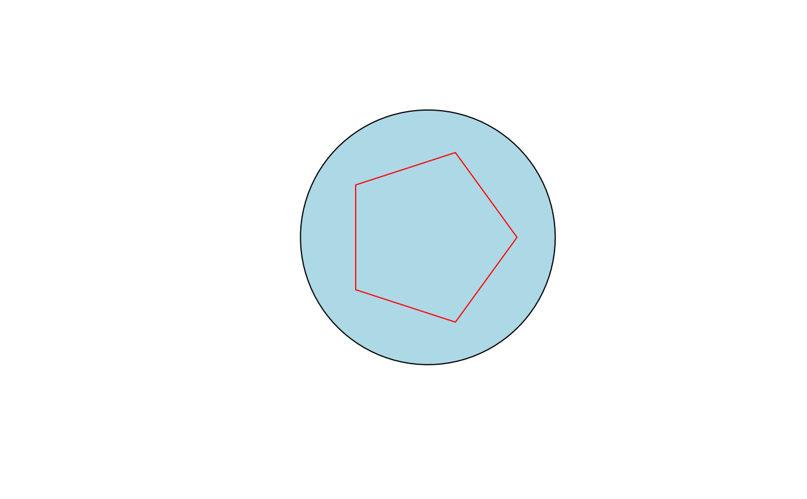

Generic function for drawing polygon-based geometry objects.
This function extends graphics::polygon() with support for
geometry objects such as circle(), ellipse(), regPolygon() and ring()
and further remains fully compatible with its original interface.
#'
For ordinary coordinate vectors the call is forwarded to
polygon. Geometry objects such as
circle, ellipse, regPolygon
and ring are dispatched to specialised methods.
Usage
polygon(x, ...)
# Default S3 method
polygon(
x,
y = NULL,
density = NULL,
angle = 45,
border = NULL,
col = NA,
lty = par("lty"),
...,
fillOddEven = FALSE
)
# S3 method for class 'ringGeometry'
polygon(x, rule = "evenodd", ...)
# S3 method for class 'polygonGeometry'
polygon(x, ...)Arguments
- x
An object to be drawn.
- ...
Further arguments passed to the corresponding method.
- y
Numeric vector of y-coordinates.
- density
Density of shading lines.
- angle
Angle of shading lines in degrees.
- border
Border colour.
- col
Fill colour.
- lty
Line type.
- fillOddEven
Logical; should the odd-even rule be used for filling?
- rule
Character string specifying the filling rule passed to
polypath. One of"evenodd"or"winding".
See also
arc,
circle,
ellipse,
regPolygon,
ring,
polygon
Other geometry:
arc(),
band(),
bezier(),
canvas(),
polarGrid(),
rotate(),
shade(),
transformXY()
Examples
canvas()
polygon(
circle(radius = 1),
col = "lightblue"
)
polygon(
regPolygon(
radius = 0.7,
numVertices = 5
),
border = "red"
)
